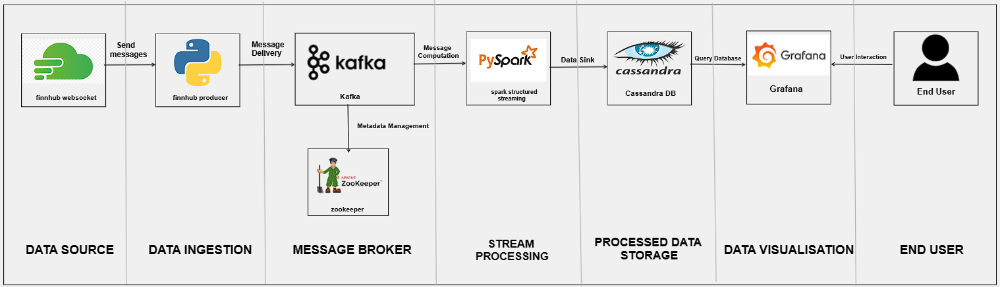
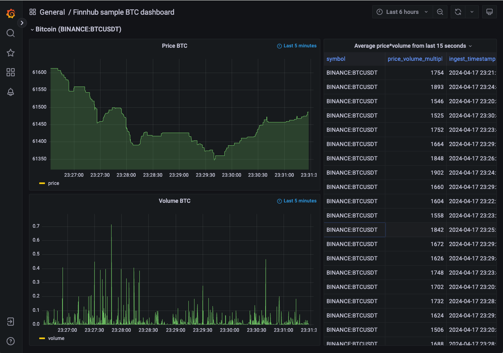
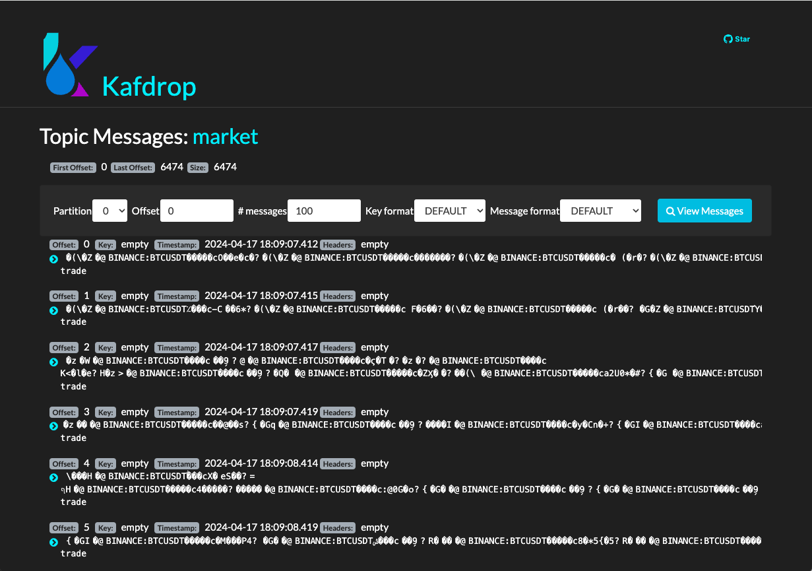
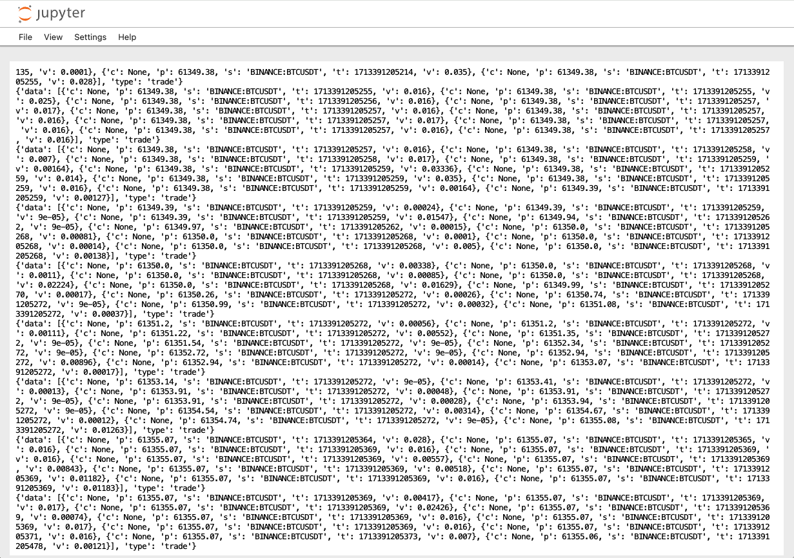
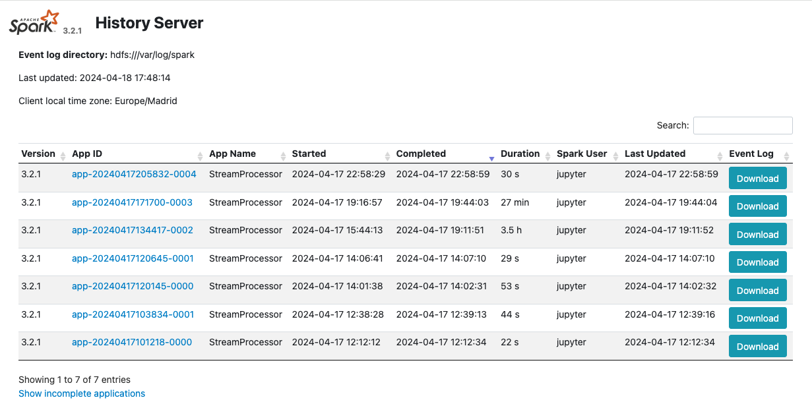
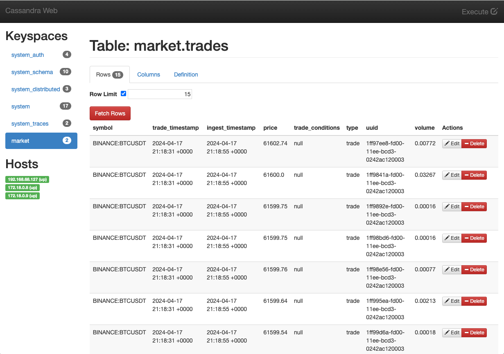

Desarrollo de un cuadro de mandos para Finnhub Stock#
José Antonio Martínez y Manuel Torres
Bases de datos a gran escala. Máster en Ingeniería Informática. Universidad de Almería
Finnhub Stock es una API que proporciona datos de acciones en tiempo real, noticias financieras y más. Es una herramienta útil para desarrolladores que desean crear aplicaciones financieras o realizar análisis de datos. En este tutorial vamos a ver cómo crear una plataforma alrededor de la API de Finnhub Stock. La plataforma ofrecerá un cuadro de mandos con información en tiempo real sobre las acciones bursátiles de una empresa. Los datos obtenidos de la API de Finnhub Stock se enviarán a un servidor Kafka para su procesamiento posterior mediante Spark Streaming. Los datos procesados se almacenarán en una base de datos Cassandra para su consulta y visualización en un cuadro de mandos en Grafana. Con estos componentes, podremos crear una plataforma completa para visualizar los precios en tiempo real de las acciones de una empresa. La plataforma nos permitirá realizar análisis de datos sobre las acciones y tomar decisiones informadas sobre inversiones financieras. La plataforma se instalará en un entorno de pruebas con Docker y se ejecutará sobre una máquina virtual OpenStack, la cual crearemos con Terraform.
Objetivos
Aprender a utilizar la API de Finnhub Stock para obtener datos de acciones en tiempo real.
Desarrollar una plataforma de data streaming y visualización de Finnhub Stock con Apache Kafka, Apache Spark, Cassandra y Grafana.
Crear un cuadro de mandos interactivo con Grafana para visualizar los precios en tiempo real de las acciones de una empresa.
Destacar la importancia de la infraestructura como código (IaC) para despliegues automatizados.
Tip
Disponibles en GitHub los siguientes repositorios:
:numbered:
Introducción#
Finnhub Stock es una API que proporciona datos de acciones en tiempo real, noticias financieras y más. Es una herramienta útil para desarrolladores que desean crear aplicaciones financieras o realizar análisis de datos. Actualmente, Finnhub Stock ofrece una API gratuita con una amplia gama de funcionalidades. Entre estas funcionalidades se incluyen la obtención de precios en tiempo real, datos históricos, información sobre empresas y más. Algunas de estas funcionalidades están disponibles en el plan gratuito, mientras que otras requieren una suscripción de pago. Los servicios están disponibles como API REST y Websocket, lo que permite a los desarrolladores elegir la forma de acceder a los datos. La API de Finnhub Stock es fácil de usar y proporciona una gran cantidad de datos para ayudarte a desarrollar tus aplicaciones financieras.
En este tutorial vamos a ver cómo crear una plataforma alrededor de la API de Finnhub Stock. La plataforma creada ofrecerá un cuadro de mandos con información en tiempo real sobre las acciones de una empresa. Para ello, desarrollaremos los siguientes componentes:
Un componente para consumir de la API de Finnhub Stock y obtener los datos de las acciones de una empresa. Este componente realizará solicitudes Websocket a la API para obtener los precios en tiempo real de las acciones. Los datos serán enviados a un servidor Kafka para su procesamiento posterior. Este componente actuará como productor de datos a la plataforma.
Un componente Spark Streaming para procesar los datos de las acciones en tiempo real. Este componente leerá los datos del servidor Kafka y realizará cálculos sobre los precios de las acciones.
Una base de datos para almacenar los datos procesados por el componente Spark Streaming. Utilizaremos una base de datos NoSQL como Cassandra para almacenar los datos de las acciones. Los datos se almacenarán en tablas que permitan realizar consultas eficientes sobre los precios de las acciones. Esta base de datos será el repositorio de datos de la plataforma.
Un cuadro de mandos en Grafana para visualizar los datos de las acciones de una empresa. Utilizaremos Grafana para crear gráficos interactivos que muestren los precios en tiempo real de las acciones. Los gráficos se actualizarán automáticamente a medida que se reciban nuevos datos de la API de Finnhub Stock.
La figura siguiente muestra la arquitectura de la plataforma que vamos a desarrollar.

Con estos componentes, podremos crear una plataforma completa para visualizar los precios en tiempo real de las acciones de una empresa. La plataforma nos permitirá realizar análisis de datos sobre las acciones y tomar decisiones informadas sobre inversiones financieras.
La figura siguiente muestra un ejemplo del cuadro de mandos que vamos a crear con Grafana. En el cuadro de mandos, podremos ver los precios en tiempo real de las acciones de una empresa. Los gráficos se actualizarán automáticamente a medida que se reciban nuevos datos de la API de Finnhub Stock y se procesen en la plataforma.

Configuración de la plataforma#
Para configurar la plataforma, necesitaremos instalar y configurar los siguientes componentes:
Apache Kafka: Utilizaremos Apache Kafka como servidor de mensajería para guardar los datos recibidos de la API de Finnhub Stock y enviar los datos de las acciones al componente Spark Streaming.
Apache Spark: Utilizaremos Apache Spark para procesar los datos de las acciones en tiempo real y realizar cálculos sobre los precios de las acciones.
Apache Cassandra: Utilizaremos Apache Cassandra como base de datos NoSQL para almacenar los datos de las acciones procesados por el componente Spark Streaming.
Grafana: Utilizaremos Grafana para crear un cuadro de mandos interactivo que muestre los precios en tiempo real de las acciones de una empresa.
En los siguientes pasos, veremos cómo instalar y configurar cada uno de estos componentes en nuestra plataforma.
Note
Los scripts del tutorial para producir, consumir y procesar datos están programdos en Python.
Esta plataforma se instalará en un entorno de pruebas con Docker. Dicha plataforma se ejecutará sobre una máquina virtual en un cloud OpenStack, la cual crearemos con Infraestructura como Código (IaC) con Terraform.
Creación de la máquina virtual OpenStack con Terraform#
Terraform es una herramienta de código abierto que permite definir y configurar la infraestructura mediante programación, con código. Con Terraform, podemos definir nuestra infraestructura como código y desplegarla de forma automatizada. Para más información sobre Terraform, puedes consultar este tutorial sobre despliegue de infraestructura con Terraform.
Note
Para instalar Terraform, puedes seguir las instrucciones de la documentación oficial de Terraform.
En este caso, vamos a utilizar Terraform para crear una máquina virtual en OpenStack. La máquina virtual será el lugar donde desplegaremos nuestra plataforma de data streaming y visualización de Finnhub Stock. Cabe destacar lo siguiente:
Note
El código de Terraform se encuentra en este repositorio de GitHub.
Archivo
variables.tf: Define las variables necesarias para la configuración de la máquina virtual, como el nombre de la máquina, la imagen base, el sabor, la red, etc.variable "openstack_user_name" {} ① variable "openstack_tenant_name" {} ② variable "PASSWORD" {} ③ variable "openstack_auth_url" {} ④ variable "openstack_keypair" {} ⑤ variable "cidr" {} ⑥ variable "image_name" {} ⑦ variable "availability_zone" {} ⑧ variable "flavor_name" {} ⑨ variable "network_name" {} ⑩ variable "floating_ip" {} ⑪ variable "openstack_private_key_file" {} ⑫
Nombre de usuario de OpenStack.
Nombre del proyecto de OpenStack donde se creará la máquina virtual.
Contraseña del usuario de OpenStack.
URL de autenticación de OpenStack.
Nombre del par de claves de OpenStack (contiene la clave pública).
Rango de direcciones IP para la red de la máquina virtual.
Nombre de la imagen base de la máquina virtual.
Zona de disponibilidad de la máquina virtual.
Sabor de la máquina virtual (tamaño de la instancia).
Nombre de la red donde se conectará la máquina virtual.
Dirección IP flotante para la máquina virtual.
Ruta al archivo local de clave privada para conectarse a la máquina virtual.
Archivo
terraform.tfvars: Define los valores de las variables necesarias para la configuración de la máquina virtual.openstack_user_name = "********" openstack_tenant_name = "********" openstack_auth_url = "********" openstack_keypair = "********" cidr = "********" image_name = "********" availability_zone = "********" flavor_name = "********" ① network_name = "********" floating_ip = "********" openstack_private_key_file = "********"
El tamaño de la instancia será de al menos 32 GB de RAM y 8 CPUs por la cantidad de servicios que se van a ejecutar y las necesidades de Spark Streaming.
Note
No se ha incluido la contraseña de OpenStack en el archivo
terraform.tfvarspor motivos de seguridad. Se puede definir la contraseña como una variable de entorno o introducirla manualmente al ejecutar Terraform.
Archivo
provider.tf: Define el proveedor de OpenStack y las credenciales necesarias para autenticarse en OpenStack.terraform { required_version = ">= 0.14.0" required_providers { openstack = { source = "terraform-provider-openstack/openstack" version = "~> 1.53.0" } } } provider "openstack" { user_name = var.openstack_user_name tenant_name = var.openstack_tenant_name password = var.PASSWORD auth_url = var.openstack_auth_url }
Archivo
security-groups.tf: Define el grupo de seguridad de OpenStack y las reglas necesarias para acceder a los componentes expuestos de la plataforma.Note
Se necesitan reglas de seguridad al menos para los puertos 22 (SSH), 443 (HTTPS), 19000 (Kafdrop), 4000 (Cassandra Web), 3000 (Grafana) y 8080 (Spark Master).
# Create tradedataprocessing security group resource "openstack_networking_secgroup_v2" "tradedataprocessing" { name = "tradedataprocessing" description = "data processing security group" } resource "openstack_networking_secgroup_rule_v2" "ssh" { description = "SSH" direction = "ingress" ethertype = "IPv4" protocol = "tcp" port_range_max = 22 port_range_min = 22 security_group_id = openstack_networking_secgroup_v2.tradedataprocessing.id } resource "openstack_networking_secgroup_rule_v2" "https" { description = "HTTPS" direction = "ingress" ethertype = "IPv4" protocol = "tcp" port_range_max = 443 port_range_min = 443 security_group_id = openstack_networking_secgroup_v2.tradedataprocessing.id } resource "openstack_networking_secgroup_rule_v2" "kafdrop" { description = "kafdrop" direction = "ingress" ethertype = "IPv4" protocol = "tcp" port_range_max = 19000 port_range_min = 19000 security_group_id = openstack_networking_secgroup_v2.tradedataprocessing.id } resource "openstack_networking_secgroup_rule_v2" "cassandraweb" { description = "cassandraweb" direction = "ingress" ethertype = "IPv4" protocol = "tcp" port_range_max = 4000 port_range_min = 4000 security_group_id = openstack_networking_secgroup_v2.tradedataprocessing.id } resource "openstack_networking_secgroup_rule_v2" "grafana" { description = "grafana" direction = "ingress" ethertype = "IPv4" protocol = "tcp" port_range_max = 3000 port_range_min = 3000 security_group_id = openstack_networking_secgroup_v2.tradedataprocessing.id } resource "openstack_networking_secgroup_rule_v2" "sparkmaster" { description = "sparkmaster" direction = "ingress" ethertype = "IPv4" protocol = "tcp" port_range_max = 8080 port_range_min = 8080 security_group_id = openstack_networking_secgroup_v2.tradedataprocessing.id } resource "openstack_networking_secgroup_rule_v2" "sparkhistoryserver" { description = "sparkhistoryserver" direction = "ingress" ethertype = "IPv4" protocol = "tcp" port_range_max = 18080 port_range_min = 18080 security_group_id = openstack_networking_secgroup_v2.tradedataprocessing.id } resource "openstack_networking_secgroup_rule_v2" "hadoopjobhistory" { description = "hadoopjobhistory" direction = "ingress" ethertype = "IPv4" protocol = "tcp" port_range_max = 19888 port_range_min = 19888 security_group_id = openstack_networking_secgroup_v2.tradedataprocessing.id }
Archivo
main.tf: Define los recursos de Terraform necesarios para crear la máquina virtual en OpenStack.Note
La máquina virtual creada se aprovisionará con Docker y otros componentes necesarios para instalar la plataforma de data streaming y visualización de Finnhub Stock. Esto se hará mediante un script de inicialización que se ejecutará al crear la máquina virtual.
resource "openstack_compute_instance_v2" "tradedataprocessing_instance" {
name = "tradedataprocessing"
image_name = var.image_name
availability_zone = var.availability_zone
flavor_name = var.flavor_name
key_pair = var.openstack_keypair
security_groups = [openstack_networking_secgroup_v2.tradedataprocessing.id]
network {
name = var.network_name
}
user_data = file("tradedataprocessing-setup.sh") ①
}
resource "openstack_compute_floatingip_associate_v2" "ip_assoc" {
floating_ip = var.floating_ip
instance_id = openstack_compute_instance_v2.tradedataprocessing_instance.id
depends_on = [
openstack_compute_instance_v2.tradedataprocessing_instance
]
}
Archivo
tradedataprocessing-setup.sh: Script de inicialización de la máquina virtual.Archivo
tradedataprocessing-setup.sh: Script de inicializació de la máquina virtual para la instalación de Docker y otros componentes necesarios (p.e.curl,make).#!/bin/bash echo "Add Docker's official GPG key" apt-get update apt-get install -y ca-certificates curl make install -m 0755 -d /etc/apt/keyrings curl -fsSL https://download.docker.com/linux/ubuntu/gpg -o /etc/apt/keyrings/docker.asc chmod a+r /etc/apt/keyrings/docker.asc echo "Add the repository to Apt sources" echo \ "deb [arch=$(dpkg --print-architecture) signed-by=/etc/apt/keyrings/docker.asc] https://download.docker.com/linux/ubuntu \ $(. /etc/os-release && echo "$VERSION_CODENAME") stable" | \ sudo tee /etc/apt/sources.list.d/docker.list > /dev/null apt-get update echo "Install Docker packages" apt-get install -y docker-ce docker-ce-cli containerd.io docker-buildx-plugin docker-compose-plugin usermod -aG docker ubuntu systemctl enable docker exit 0
Para crear la máquina virtual en OpenStack, ejecutamos los siguientes comandos:
$ terraform init
$ terraform apply
Tras unos minutos, la máquina virtual estará creada y configurada con Docker y el resto de componentes necesarios para instalar la plataforma de data streaming y visualización de Finnhub Stock.
Creación de la plataforma de data streaming y visualización con Docker#
Una vez creada la máquina virtual en OpenStack, podemos proceder a instalar la plataforma de data streaming y visualización de Finnhub Stock con Docker. Para ello, utilizaremos Docker Compose para definir y ejecutar los servicios necesarios para la plataforma. El código de Docker Compose se encuentra en este repositorio de GitHub. En el archivo docker-compose.yml se definen los servicios necesarios para la plataforma:
Kafka
Zookeeper: Servidor de coordinación distribuida para *Apache Kafka.
Kafka: Servidor de mensajería para enviar los datos de *las acciones al componente Spark Streaming.
Kafdrop: Interfaz web para visualizar los temas y los mensajes de Kafka.
Spark
Spark Master: Servidor maestro de Apache Spark.
Spark Worker: Servidor esclavo de Apache Spark.
Spark History Server: Servidor de historial de Apache Spark para visualizar los trabajos y las etapas de Spark.
Cassandra
Cassandra: Cluster de Cassandra para almacenar los datos de las acciones.
Cassandra init: Componenete de inicialización de Cassandra para crear las tablas necesarias.
Cassandra Web: Interfaz web para visualizar y gestionar la base de datos Cassandra.
Grafana: Servidor de Grafana para visualizar los datos de las acciones en tiempo real.
Jupyter: Servidor de Jupyter para ejecutar y visualizar el código Python de los componentes de la plataforma.
La mayoría de estos componentes se comunicarán mediante su nombre de servicio en la red interna de Docker. Sin embargo, hay algunos componentes que necesitan hacerlo a través de la dirección IP de la máquina virtual. Para ello, definiremos la dirección IP de la máquina virtual en una variable de entorno en el archivo .env:
EXTERNAL_IP= "********"
Note
El script de inicialización de la máquina virtual ha creado un archivo .env con la dirección IP flotante de la máquina virtual. El archivo se encuentra en el directorio /home/ubuntu de la máquina virtual. A la hora de ejecutar Docker Compose, se podrá usar ese archivo para definir la dirección IP de la máquina virtual en los servicios que lo necesiten (p.e. Kafka y Cassandra Web).
Para algunos servicios, como Zookeper, Kafka, Kafdrop, Cassandra, Cassandra Web, Cassandra init y Grafana, usaremos imágenes de Docker que se encuentran en el Docker Hub. Sin embargo, para los servicios de Spark y Jupyter, construiremos las imágenes en el momento de la ejecución. Para ello, definimos los Dockerfiles correspondientes. Todos los archivos necesarios para construir las imágenes de Docker se encuentran en el repositorio.
Para ejecutar la plataforma de data streaming y visualización de Finnhub Stock, utilizamos el siguiente comando cargando las variables de entorno del archivo /home/ubuntu/.env. Este archivo contiene la dirección IP de la máquina virtual que necesitan algunos servicios para comunicarse entre sí y ha sido creado por el script de inicialización de la máquina virtual.
$ docker-compose up -d --env-file /home/ubuntu/.env
Tras unos minutos, la plataforma estará desplegada y lista para su uso. Docker Compose habrá creado los siguientes servicios en la máquina virtual. Algunos de ellos serán accesibles a través de la dirección IP de la máquina virtual en los puertos correspondientes. Otros no es necesario que sean accesibles desde el exterior, y simplemente se comunicarán entre sí por la red interna de Docker. Y otros, simplemente habrán sido creados para la configuración de la plataforma. A continuación, se muestra un resumen de los servicios creados:
Kafka
Zookeeper: No es necesario acceder a este servicio directamente por lo que no se tiene que exponer ningún puerto.
Kafka: Instalación de un solo nodo. No es necesario acceder a este servicio directamente por lo que no se tiene que exponer ningún puerto.
Kafdrop: Accesible a través de la dirección IP de la máquina virtual en el puerto 19000.
Spark
Spark Master: Accesible a través de la dirección IP de la máquina virtual en el puerto 8080.
Spark Worker: No es necesario acceder a este servicio directamente por lo que no se tiene que exponer ningún puerto.
Spark History Server: Accesible a través de la dirección IP de la máquina virtual en los puertos 18080 y 19888.
Cassandra
Cassandra: Instalación de tres nodos en modo cluster. No es necesario acceder a este servicio directamente por lo que no se tiene que exponer ningún puerto.
Cassandra init: Su cometido es inicializar la base de datos Cassandra. Una vez finalizada su tarea, se detiene automáticamente. Por tanto, no tiene que exponer ningún puerto.
Cassandra Web: Accesible a través de la dirección IP de la máquina virtual en el puerto 4000.
Grafana: Accesible a través de la dirección IP de la máquina virtual en el puerto 3000.
Jupyter: Accesible a través de la dirección IP de la máquina virtual en el puerto 443.
De esta forma, podremos acceder a los servicios de la plataforma a través de la dirección IP de la máquina virtual en los puertos correspondientes:
Grafana: http://EXTERNAL_IP:3000
Spark Master: http://EXTERNAL_IP:8080
Kafdrop: http://EXTERNAL_IP:19000
Cassandra Web: http://EXTERNAL_IP:4000
Jupyter: https://EXTERNAL_IP:443
Con estos componentes, podremos crear una plataforma completa para visualizar los precios en tiempo real de las acciones de una empresa. La plataforma nos permitirá realizar análisis de datos sobre las acciones y tomar decisiones informadas sobre inversiones financieras.
Configuración inicial de la plataforma#
Una vez desplegada la plataforma, necesitaremos realizar algunas configuraciones iniciales para empezar a utilizarla. A continuación, se detallan las configuraciones iniciales necesarias para cada uno de los componentes de la plataforma.
Configuración de Kafka#
Kafka es un servidor de mensajería que utilizaremos para enviar los datos de las acciones al componente Spark Streaming. Para configurar Kafka, necesitaremos crear un tema en el servidor de Kafka y configurar el productor de datos para enviar los datos al tema. La creación del tema la haremos con comandos en el contenedor de Kafka. A continuación, muestra cómo crear el tema market en Kafka.
$ docker exec kafka \
kafka-topics --bootstrap-server kafka:9092 \
--create \
--topic market
Configuración de Jupyter#
Para ejecutar los productores, consumidores y procesadores de datos de la plataforma, utilizaremos Jupyter. En concreto, lanzaremos todos los scripts desde la terminal de Jupyter. En nuestro caso, trabajaremos con Python 3.10. Para facilitar la gestión de los entornos de Python, utilizaremos Anaconda. A continuación, se muestra cómo instalar Anaconda en el contenedor de Jupyter.
Desde la terminal de Jupyter, ejecutamos los siguientes comandos:
$ curl https://repo.anaconda.com/archive/Anaconda3-2024.02-1-Linux-x86_64.sh -o anaconda.sh
$ bash anaconda.sh
En el proceso de instalación, aceptamos los términos de la licencia y elegimos la ubicación de la instalación aceptando los valores predeterminados. Una vez finalizada la instalación, nos pedirá si queremos inicializar Anaconda. Aceptamos la inicialización y, una vez finalizada, cargamos el entorno de Anaconda con el siguiente comando:
$ conda init bash
$ source ~/.bashrc
A continuación creamos un entorno de Anaconda con Python 3.10 y lo activamos:
$ conda create -n python3_10 python=3.10
$ conda activate python3_10
Desarrollo de la plataforma#
Una vez configurada la plataforma, podemos empezar a desarrollar los componentes necesarios para enviar, procesar y visualizar los datos de las acciones de una empresa. En los siguientes pasos, veremos cómo desarrollar los componentes de la plataforma.
Creación de un productor de datos de Finnhub Stock#
Para enviar los datos de las acciones al servidor de Kafka, necesitaremos crear un productor de datos que consuma la API de Finnhub Stock y envíe los datos al tema market de Kafka. El productor de datos lo programaremos en Python y lo ejecutaremos desde el entorno python3_10 de Anaconda. A continuación, se muestra un ejemplo de código para un productor de datos de Finnhub Stock en Python. El código del productor se puede encontrar en la carpeta producer de este repositorio de GitHub.
websockets
websocket-client
finnhub-python
kafka-python
avro
{
"KAFKA_SERVER": "kafka",
"KAFKA_PORT": "29092",
"KAFKA_TOPIC_NAME": "market",
"FINNHUB_API_KEY": "**********" ①
}
Clave de la API de Finnhub Stock.
import os
import websocket
import json
import io
import avro.schema
import avro.io
from kafka import KafkaProducer
# https://finnhub.io/docs/api/websocket-trades
class FinnhubProducer:
def __init__(self):
"""
Producer class that connects to the finnhub websocket, encodes & validates the JSON payload
in avro format against pre-defined schema then sends data to kafka.
"""
# define config from config file
self.config = self.load_config('config.json')
# define the kafka producer here. This assumes there is a kafka server already setup at the address and port
#self.producer = KafkaProducer(bootstrap_servers=f"{self.config['KAFKA_SERVER']}:{self.config['KAFKA_PORT']}",api_version=(0, 10, 1))
kafka_servers=[config['KAFKA_SERVER'] + config['KAFKA_PORT']]
self.producer = KafkaProducer(bootstrap_servers = kafka_servers,api_version=(0, 10, 1))
# define the avro schema here. This assumes the schema is already defined in the src/schemas folder
# this helps us enforce the schema when we send data to kafka
self.avro_schema = avro.schema.parse(open('trades.avsc').read())
print("AVRO schema loaded")
# define the websocket client
self.ws = websocket.WebSocketApp(f"wss://ws.finnhub.io?token={self.config['FINNHUB_API_KEY']}",
on_message=self.on_message,
on_error=self.on_error,
on_close=self.on_close)
self.ws.on_open = self.on_open
self.ws.run_forever()
def load_config(self, config_file):
with open(config_file, 'r') as f:
config = json.load(f)
return config
def avro_encode(self, data, schema):
"""
Avro encode data using the provided schema.
Parameters
----------
data : dict
Data to encode.
schema : avro.schema.Schema
Avro schema to use for encoding.
Returns
-------
bytes : Encoded data.
"""
writer = avro.io.DatumWriter(schema)
bytes_writer = io.BytesIO()
encoder = avro.io.BinaryEncoder(bytes_writer)
writer.write(data, encoder)
return bytes_writer.getvalue()
def on_message(self, ws, message):
"""
Callback function that is called when a message is received from the websocket.
Parameters
----------
ws : websocket.WebSocketApp
Websocket client.
message : str
Message received from the websocket.
"""
message = json.loads(message)
avro_message = self.avro_encode(
{
'data': message['data'],
'type': message['type']
},
self.avro_schema
)
self.producer.send(self.config['KAFKA_TOPIC_NAME'], avro_message)
def on_error(self, ws, error):
"""
Websocket error callback. This currently just prints the error to the console.
In a production environment, this should be logged to a file or sent to a monitoring service.
Parameters
----------
ws : websocket.WebSocketApp
Websocket client.
error : str
Error message.
"""
print(error)
def on_close(self, ws):
"""
Websocket close callback. This currently just prints a message to the console.
In a production environment, this should be logged to a file or sent to a monitoring service.
Parameters
----------
ws : websocket.WebSocketApp
Websocket client.
"""
print("### closed ###")
def on_open(self, ws):
"""
Websocket open callback. This subscribes to the MSFT stock topic on the websocket.
Parameters
----------
ws : websocket.WebSocketApp
Websocket client.
"""
print("sending subscribe message")
self.ws.send('{"type":"subscribe","symbol":"BINANCE:BTCUSDT"}')
print("subscribed to AAPL")
if __name__ == "__main__":
FinnhubProducer()
Para ejecutar el productor de datos, haremos lo siguiente:
Activamos el entorno de Anaconda con Python 3.10.
$ conda activate python3_10
Instalamos las dependencias necesarias.
$ pip install -r requirements.txt
Ejecutamos el productor de datos.
$ python producer.py
El productor de datos se conectará a la API de Finnhub Stock y enviará los datos de las acciones al servidor de Kafka. Podremos ver los mensajes en el tema market de Kafka utilizando la interfaz web de Kafdrop. La figura siguiente muestra un ejemplo de mensajes en el tema market de Kafka.

Con el productor de datos en funcionamiento, los datos de Finnhub Stock se están enviando ya al servidor de Kafka para su procesamiento posterior por el componente Spark Streaming. Antes de pasar a crear el componente de Spark Streaming, crearemos un pequeño consumidor de datos para verificar que los datos se están enviando correctamente al servidor de Kafka.
Creación de un consumidor de datos de Kafka#
Para verificar que los datos se están enviando correctamente al servidor de Kafka, crearemos un consumidor de datos que lea los mensajes del tema market de Kafka. El consumidor de datos lo programaremos en Python y lo ejecutaremos desde el entorno python3_10 de Anaconda. El código del consumidor de datos se puede encontrar en la carpeta consumer de este repositorio de GitHub.
websockets
websocket-client
finnhub-python
kafka-python
avro
from kafka import KafkaConsumer
import json
import io
import avro.io
import avro.schema
with open('config.json', 'r') as f:
config = json.load(f)
# define the consumer to read from the Kafka topic
# define kafka servers from the config file (KAFKA_SERVER variable)
kafka_servers=[config['KAFKA_SERVER'] + config['KAFKA_PORT']]
consumer = KafkaConsumer(
config['KAFKA_TOPIC_NAME'],
bootstrap_servers = kafka_servers,
api_version=(0, 10, 1)
)
# define the Avro schema that corresponds to the encoded data
schema = avro.schema.parse(open('trades.avsc').read())
for message in consumer:
# asssume 'byte_string' contains the Avro-encoded byte string,
# we need to decode it using avro library
bytes_reader = io.BytesIO(message.value)
decoder = avro.io.BinaryDecoder(bytes_reader)
reader = avro.io.DatumReader(schema)
data = reader.read(decoder)
print(data)
También necesitaremos el archivo config.json con la configuración del consumidor de datos.
{
"KAFKA_SERVER": "kafka",
"KAFKA_PORT": "29092",
"KAFKA_TOPIC_NAME": "market"
}
Por último, también necesitaremos el archivo trades.avsc con el esquema Avro que corresponde a los datos codificados.
Note
Avro es un sistema de serialización de datos que proporciona un esquema para la codificación de los datos muy utilizado en el contexto de Apache Hadoop y Apache Kafka. El esquema Avro define la estructura de los datos codificados y permite a los consumidores de datos decodificar los mensajes correctamente.
{
"type" : "record",
"name" : "message",
"namespace" : "FinnhubProducer",
"fields" : [ {
"name" : "data",
"type" : {
"type" : "array",
"items" : {
"type" : "record",
"name" : "data",
"fields" : [ {
"name" : "c",
"type":[
{
"type":"array",
"items":["null","string"],
"default":[]
},
"null"
],
"doc" : "Trade conditions"
},
{
"name" : "p",
"type" : "double",
"doc" : "Price at which the stock was traded"
},
{
"name" : "s",
"type" : "string",
"doc" : "Symbol of a stock"
},
{
"name" : "t",
"type" : "long",
"doc" : "Timestamp at which the stock was traded"
},
{
"name" : "v",
"type" : "double",
"doc" : "Volume at which the stock was traded"
} ]
},
"doc" : "Trades messages"
},
"doc" : "Contains data inside a message"
},
{
"name" : "type",
"type" : "string",
"doc" : "Type of message"
} ],
"doc" : "A schema for upcoming Finnhub messages"
}
El esquema Avro debe coincidir con el esquema utilizado por el productor de datos para codificar los mensajes. De lo contrario, el consumidor de datos no podrá decodificar los mensajes correctamente.
Note
Para crear el archivo trades.avsc, puedes utilizar una herramienta como Konbert para convertir un JSON en un esquema Avro. Basta con subir un archivo JSON con una muestra de los datos codificados, seleccionar que sólo se quiere obtener el esquema y la herramienta generará el esquema Avro correspondiente en un archivo de texto con extensión .avsc.
Para ejecutar el consumidor de datos, haremos lo siguiente:
Activamos el entorno de Anaconda con Python 3.10.
$ conda activate python3_10
Instalamos las dependencias necesarias.
$ pip install -r requirements.txt
Ejecutamos el consumidor de datos.
$ python consumer.py
El consumidor de datos leerá los mensajes del tema market de Kafka y los decodificará utilizando el esquema Avro. Podremos ver los mensajes en la consola a medida que se reciban nuevos datos de la API de Finnhub Stock y se envíen al servidor de Kafka. Con el consumidor de datos en funcionamiento, podemos verificar que los datos se están enviando correctamente al servidor de Kafka y que se pueden leer y decodificar correctamente.
La figura siguiente muestra un ejemplo de mensajes decodificados del consumidor de datos de Kafka.

Con el productor y el consumidor de datos en funcionamiento, podemos confirmar que los datos de Finnhub Stock se están enviando correctamente al servidor de Kafka y que se pueden leer y decodificar correctamente. En el siguiente paso, crearemos el componente Spark Streaming para procesar los datos de las acciones en tiempo real.
Creación de un componente Spark Streaming#
El componente Spark Streaming procesará los datos de las acciones en tiempo real y calculará estadísticas sobre los precios de las acciones. Utilizaremos Apache Spark para procesar los datos de las acciones y realizar cálculos sobre los precios de las acciones. El componente Spark Streaming leerá los datos del servidor de Kafka, los procesará en tiempo real y los almacenará en la base de datos Cassandra. El código del componente Spark Streaming se puede encontrar en la carpeta spark de este repositorio de GitHub. A continuación, se muestra un ejemplo de código para un componente Spark Streaming en Python.
pyspark==3.2.1
kafka-python
cassandra-driver
from pyspark.sql import SparkSession
from pyspark.sql.functions import *
from pyspark.sql.avro.functions import from_avro
from pyspark.sql.streaming import *
from uuid import uuid1
# create a Spark session
spark = SparkSession \
.builder \
.master("spark://master:7077") \
.appName("StreamProcessor") \
.config("spark.cassandra.connection.host", 'cassandra1') \
.config("spark.cassandra.connection.port", '9042') \
.config("spark.cassandra.auth.username", 'cassandra') \
.config("spark.cassandra.auth.password", 'cassandra') \
.getOrCreate()
# suppress all the INFO logs except for errors
spark.sparkContext.setLogLevel("ERROR")
# define the Avro schema that corresponds to the encoded data
tradesSchema = open('./trades.avsc', 'r').read()
@udf(returnType=StringType())
def makeUUID():
return str(uuid1())
# define the stream to read from the Kafka topic market
inputDF = spark \
.readStream \
.format("kafka") \
.option("kafka.bootstrap.servers", "kafka:29092") \
.option("subscribe", "market") \
.option("minPartitions", "1") \
.option("maxOffsetsPerTrigger", "1000") \
.option("useDeprecatedOffsetFetching", "false") \
.load()
# explode the data column and select the columns we need
expandedDF = inputDF \
.withColumn("avroData", from_avro(col("value"), tradesSchema)) \
.select(col("avroData.*")) \
.select(explode(col("data")), col("type")) \
.select(col("col.*"), col("type"))
# create the final dataframe with the columns we need plus the ingest timestamp
finalDF = expandedDF \
.withColumn("uuid", makeUUID()) \
.withColumnRenamed("c", "trade_conditions") \
.withColumnRenamed("p", "price") \
.withColumnRenamed("s", "symbol") \
.withColumnRenamed("t", "trade_timestamp") \
.withColumnRenamed("v", "volume") \
.withColumn("trade_timestamp", (col("trade_timestamp") / 1000).cast("timestamp")) \
.withColumn("ingest_timestamp", current_timestamp().alias("ingest_timestamp"))
# write the final dataframe to Cassandra
# spark handles the streaming and batching for us
query = finalDF \
.writeStream \
.trigger(processingTime="5 seconds") \
.foreachBatch(lambda batchDF, batchId: \
batchDF.write \
.format("org.apache.spark.sql.cassandra") \
.option("table", "trades") \
.option("keyspace", "market") \
.mode("append") \
.save()) \
.outputMode("update") \
.start()
# create a summary dataframe with the average price * volume
summaryDF = finalDF \
.withColumn("price_volume_multiply", col("price") * col("volume")) \
.withWatermark("trade_timestamp", "15 seconds") \
.groupBy("symbol") \
.agg(avg("price_volume_multiply").alias("price_volume_multiply"))
# add UUID and ingest timestamp to the summary dataframe and rename agg column
finalsummaryDF = summaryDF \
.withColumn("uuid", makeUUID()) \
.withColumn("ingest_timestamp", current_timestamp().alias("ingest_timestamp")) \
.withColumnRenamed("avg(price_volume_multiply)", "price_volume_multiply")
# write the summary dataframe to Cassandra in 5 second batches
query2 = finalsummaryDF \
.writeStream \
.trigger(processingTime="5 seconds") \
.foreachBatch(lambda batchDF, batchId: \
batchDF.write \
.format("org.apache.spark.sql.cassandra") \
.option("table", "running_averages_15_sec") \
.option("keyspace", "market") \
.mode("append") \
.save()) \
.outputMode("update") \
.start()
# wait for the stream to terminate - i.e. wait forever
spark.streams.awaitAnyTermination()
Para ejecutar el componente Spark Streaming, haremos lo siguiente:
Activamos el entorno de Anaconda con Python 3.10.
$ conda activate python3_10
Instalamos las dependencias necesarias.
$ pip install -r requirements.txt
Ejecutamos el componente Spark Streaming.
$ spark-submit \ --master spark://<<SPARK_MASTER>>:7077 \ --packages org.apache.spark:spark-sql-kafka-0-10_2.12:3.2.1,\ org.apache.spark:spark-avro_2.12:3.2.1,\ com.datastax.spark:spark-cassandra-connector_2.12:3.2.0 \ main.py
Note
El repositorio contiene un archivo bash
run.shque facilita la ejecución del componente Spark Streaming. El archivorun.shcontiene el comandospark-submitcon las opciones necesarias para ejecutar el componente Spark Streaming. Para ejecutar el componente Spark Streaming, simplemente ejecutamos el archivorun.shdesde la terminal (p.e.bash run.shsi estamos en la terminal de Jupyter).
El componente Spark Streaming leerá los datos del servidor de Kafka, los procesará en tiempo real y los almacenará en la base de datos Cassandra. El resultado de la ejecución del componentes de Spark Streaming se puede consultar en la interfaz web de Spark History Server en la dirección http://EXTERNAL_IP:18080. Podremos ver los trabajos y las etapas de Spark en la interfaz web de Spark History Server. La figura siguiente muestra un ejemplo de la interfaz web de Spark History Server. Al seleccionar un trabajo o una etapa, podremos ver los detalles del trabajo o la etapa, incluidos los registros y las estadísticas de ejecución. Podremos utilizar la interfaz web de Spark History Server para depurar y optimizar los trabajos y las etapas de Spark.

Al mismo tiempo, los datos procesados se están almacenando en la base de datos Cassandra. Podremos ver los datos procesados en la base de datos Cassandra utilizando Cassandra Web. La figura siguiente muestra un ejemplo de datos almacenados en la base de datos Cassandra.

Con el componente Spark Streaming en funcionamiento, los datos de las acciones se están procesando en tiempo real y se están almacenando en la base de datos Cassandra. Podremos realizar consultas sobre los datos almacenados en Cassandra y visualizar los resultados en Cassandra Web. En el siguiente paso, veremos los datos procesados en la interfaz web de Grafana mediante un dashboard interactivo.
Visualización de los datos en Grafana#
Grafana es una plataforma de visualización de datos que utilizaremos para visualizar los datos de las acciones en tiempo real. Utilizaremos Grafana para crear un dashboard interactivo que muestre los precios de las acciones y las estadísticas calculadas por el componente Spark Streaming. El dashboard mostrará gráficos en tiempo real de los precios de las acciones y las medias móviles de los precios de las acciones. El dashboard se cargó en Grafana añadiéndole un archivo de configuración en formato JSON (dashboard.json) al crear la imagen de Grafana que se está usando en este tutorial. Se trata de un dashboard de ejemplo con tres paneles: uno para mostrar los precios de las acciones, otro para mostrar el volumen de las acciones y otro para mostrar las medias móviles de los precios de las acciones en un intervalo de 15 segundos.
Para acceder al dashboard en Grafana, abrimos un navegador web y vamos a la dirección http://EXTERNAL_IP:3000. El dashboard se muestra de forma predeterminada en la página principal de Grafana. Podremos ver los gráficos en tiempo real de los precios de las acciones y las medias móviles de los precios de las acciones en el dashboard. La figura siguiente muestra un ejemplo de un dashboard interactivo en Grafana.
Con el dashboard en funcionamiento, podremos visualizar los precios de las acciones y las estadísticas calculadas por el componente Spark Streaming en tiempo real. Podremos realizar análisis de datos sobre las acciones y tomar decisiones informadas sobre inversiones financieras.
Conclusiones#
En este tutorial hemos creado una plataforma de data streaming y visualización de Finnhub Stock. Se trata de una plataforma completa para visualizar los precios en tiempo real de las acciones de una empresa. Hemos utilizado tecnologías de Big Data como Apache Kafka, Apache Spark, Apache Cassandra, Grafana y Jupyter para procesar los datos de las acciones en tiempo real y visualizarlos en un dashboard interactivo. Tambien se ha utilizado Infraestructura como Código (IaC) con Terraform para crear la máquina virtual en OpenStack, mostrando cómo se puede automatizar el despliegue de la plataforma en un entorno cloud. Además, hemos utilizado contenedores, concretamente Docker, para desplegar los componentes de la plataforma, mostrando cómo se puede empaquetar y desplegar aplicaciones de forma sencilla y portable. Con esta plataforma podremos realizar análisis de datos sobre las acciones y tomar decisiones sobre inversiones financieras basadas en los datos.